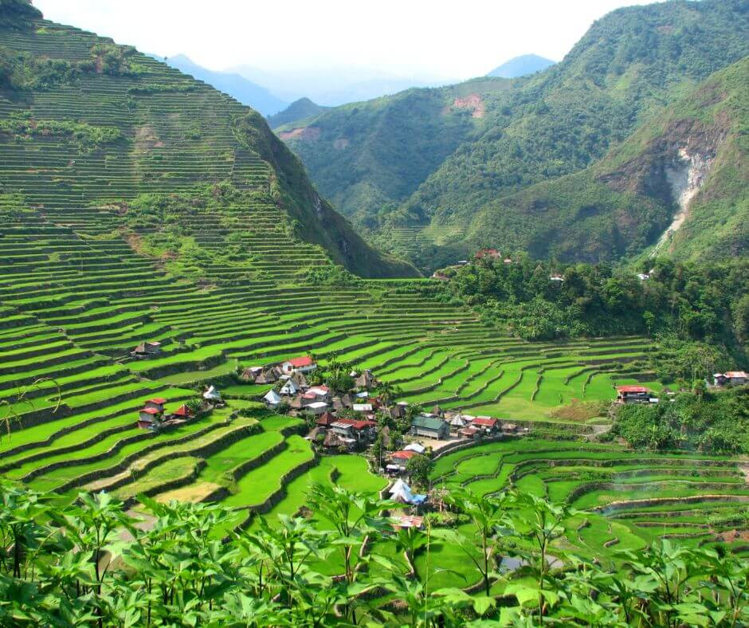
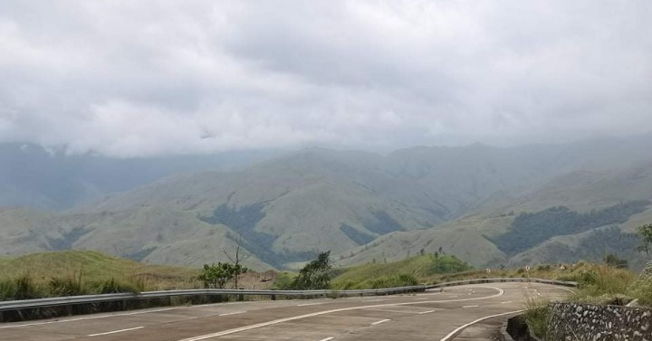

The Nalsoc Rice Terraces are a scenic agricultural landscape located in Aguilar, Pangasinan, Philippines. Carved into the slopes of the Caraballo Mountains, they showcase the long-standing rice-farming traditions of Pangasinan's upland communities and serve as a growing ecotourism destination for visitors seeking natural and cultural experiences.
Landscape and Setting

The Nalsoc Rice Terraces are nestled in the highland barangays of Aguilar, overlooking the western plains and stretching toward the distant Lingayen Gulf. Built along the natural contours of the hills, the terraces form layered paddies that create a striking patchwork landscape.
During planting and growing seasons, the fields glow in vibrant shades of green, while harvest time transforms them into warm tones of gold. The elevated terrain provides sweeping panoramas of mountains and lowlands, often wrapped in cool air and morning mist.
Though less widely known than the terraces of northern Luzon, Nalsoc offers a similarly impressive view in a more intimate and less crowded setting, making it rewarding for nature lovers and photographers.
Cultural and Agricultural Significance
The terraces are a testament to the ingenuity and resilience of local farming communities in Aguilar. For generations, farmers have maintained these stepped fields using traditional methods, including gravity-fed irrigation systems and communal labor practices.
These time-tested techniques allow rice cultivation to thrive even in sloping and mountainous terrain. Beyond their agricultural function, the terraces hold cultural value as symbols of local identity and shared heritage.
Farming activities such as planting and harvesting are often done collectively, strengthening community ties. Visitors who come during farming season may witness or even participate in some of these practices, gaining a deeper appreciation of sustainable agriculture rooted in tradition.
Ecotourism and Access

In recent years, the Nalsoc Rice Terraces have gained recognition as part of Aguilar's emerging ecotourism destinations. Travelers can reach the area through the scenic Daang Kalikasan route, a mountain road connecting Pangasinan to neighboring Zambales.
The journey itself offers views of forests, hills, and coastal landscapes, making the route part of the attraction. Tourists often pair a trip to the terraces with nearby attractions such as Mapita Falls and roadside viewing decks.
Local authorities continue to promote responsible tourism practices to ensure that visitor interest does not compromise the natural environment or the livelihoods of farming communities. This balance helps preserve the terraces while allowing guests to experience their beauty.